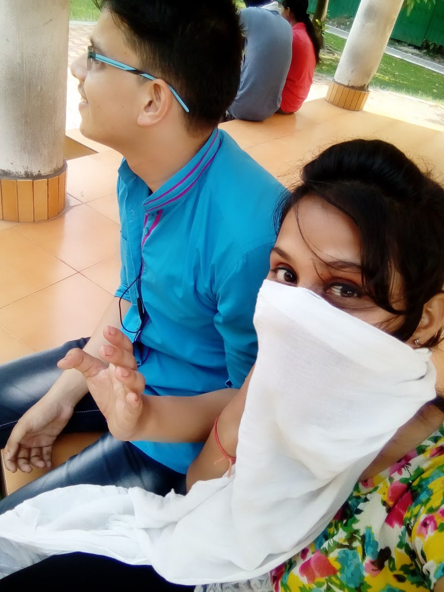

i used this blue color kyuki yeh tumahara favorite hain kehna toh bahut kuch hai
issiliye maine new way socha tumko wish karne ka
umeed krta hu tum iske ek ek part ko ache se padhogi
umeed issliye bol raha hu qki mujhe pata hain Im not important one jiska pura msg padho
Tmse judi choti se choti baat mujhe ab tk yaad hai
wo pal kaise bhool skta hu main jb maine tumhe pehli baar dekha tha
school ka wo pehla din jb mere ankhon mein bahut saare spne the
wahi tumhe dekhne ke baad wo saaare sapne tumse judde judde se lagge the mujhe
Haan maine apne anne wale saare din tumse jode the syd joda hua hun
kya main v yeh sb faltu ki baatein leke baith gya
the point is today is your BIRTHDAY abd happy birthday
aur har saal ki trh tum happy raho
Mujhe ek baat ki sach mein khushi hai
meri Priti aaj bhi wahi priti hai jisse maine pehli baar baat krni suru ki thi
yeh mt sochna ki mai date bhool chukka hu date mujhe bilkul yaad hai
kaise bhool skta hu wo 11 AUGUST ka date jis din maine tumse pehli baar baat ki thi
wo mera pehli baar tumhe daar ke msg krna aaj v aad hai mujhe
haan yehi soch rahi ho na daar kaisa haan wahi daar tumhe paane se pehle
kho dene ka daar

Yeh pehle holi ka pic. Jo tumne mujhe sbse pehle send kiya tha .
Tumhe yaad hai hum jb HOLI ke do din pehle mile the
aur raste mein aate aate hum dono ke upr kisi ne apne
ghar se paani fek diya tha . Hum dono bheeg gaye the aur
humari actually meri tbyt kharab ho gai thi
Let's tlak about ths second pic.Yeh wo pehli baar ki
pic hai jb hum ek dusre ki company enjoy krna suru kiye the
pehli baar mujhe tumhe jee bhar ke dekhne ka moka mila tha
pehli baar mai tumhare hassi ka wajah bna tha aur ek promise
bhi kiya tha maine ki MAIN GALTIYA BAAR BAAR KARNE KO TIYAAR
JO TUMHARE CHEHARE PAR HASSI LAAYENG
SOME IMPORTANT PERSONS(cilck here)
Yeh hai apke life ke sbse important persons MAA,PAPA JI,DIDIS.
Mujhe pata hai app Papa ji and Maa ke baare me bahut kuch sochi
and unse lucky koi hai bhi nhi tumhare jaisi beti jo hai unke pass
maine kavi PAPA ji and Maa ko uncle ya aunty nhi kaha qki mujhe kavi
wo feeling hi nhi aai tum sochti mai sirf apne baare me sochta hu but
actuallymein wo dono v mere liye utne hi impotant hai...
Tumhe maine ek baat kahi thi yaad hai?? MERE GHAR ME MERI BEHNO KE
ke baad agar koi aata hai toh wo APKI DIDIS.. bura mat manna but tumlogo se MAA log ka jagah maine special diya hai